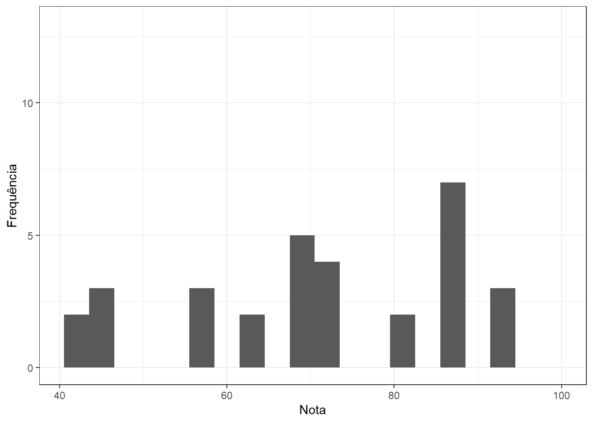
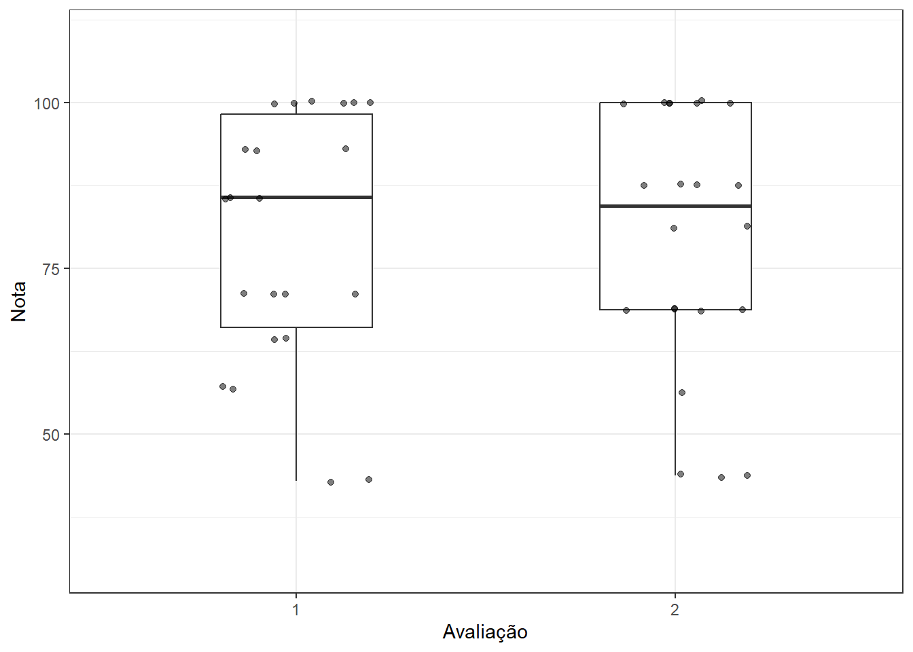
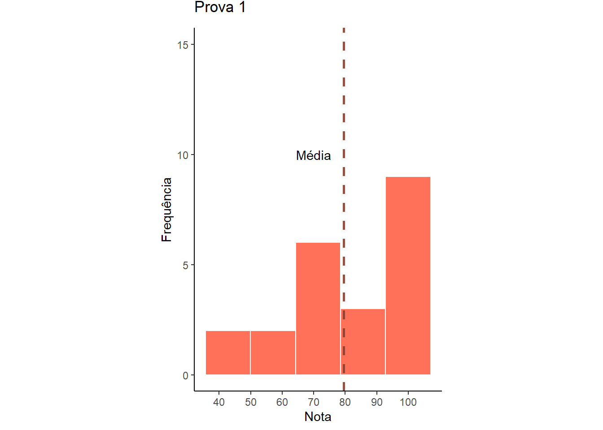
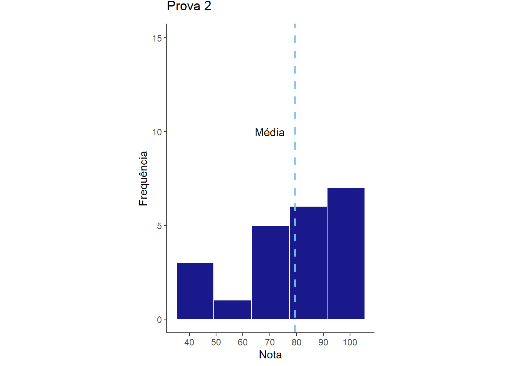
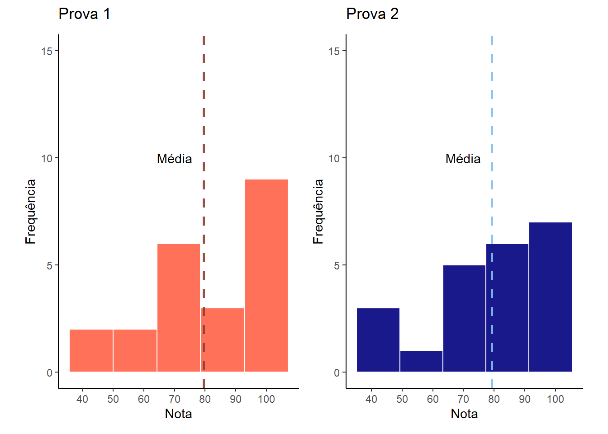

library(gsheet)
library(tidyverse)
library(ggthemes)
library(patchwork)Aula 5 - Ativiadade prática
Aula 5
Nesta aula, serão analisados e interpretados os valores das notas das duas primeiras atividades avaliativas da disciplina FIP 606.
Carregando os pacotes
Inicialmente, serão carregados os pacotes necessários para o desenvolvimento das análises.
Obtenção e visualização dos dados
Os dados utilizados foram disponibilizados em uma planilha online e serão importados utilizando a função gsheet2tbl (gsheet):
dados <- gsheet2tbl("https://docs.google.com/spreadsheets/d/1bq2N19DcZdtax2fQW9OHSGMR0X2__Z9T/edit#gid=1092065531")
Para uma rápida visualização dos dados importados, será aplicada a função glimpse (dplyr):
glimpse(dados)Rows: 44
Columns: 3
$ prova <dbl> 1, 1, 1, 1, 1, 1, 1, 1, 1, 1, 1, 1, 1, 1, 1, 1, 1, 1, 1, 1, 1, …
$ pontos <dbl> 10, 13, 12, 6, 14, 12, 14, 8, 14, 10, 10, 13, 9, 14, 9, 14, 12,…
$ nota <dbl> 71.40, 92.90, 85.70, 42.90, 100.00, 85.70, 100.00, 57.10, 100.0…
Ao avaliar o arquivo gerado acima, é possível notar que a coluna “prova” está definida como númerica (“dbl”), portanto será necessário transformá-la para um novo tipo de dado (fator - “fct”), a fim de viabilizar o decorrer da atividade.
Para isso, será utilizada a função as.factor:
dados$prova <- as.factor(dados$prova)
glimpse(dados)Rows: 44
Columns: 3
$ prova <fct> 1, 1, 1, 1, 1, 1, 1, 1, 1, 1, 1, 1, 1, 1, 1, 1, 1, 1, 1, 1, 1, …
$ pontos <dbl> 10, 13, 12, 6, 14, 12, 14, 8, 14, 10, 10, 13, 9, 14, 9, 14, 12,…
$ nota <dbl> 71.40, 92.90, 85.70, 42.90, 100.00, 85.70, 100.00, 57.10, 100.0…Sumário estatístico
Para um breve sumário estatístico dos valores das avaliações, será utilizada a coluna “nota” (normalizada previamente). Será feito o agrupamento dos valores de acordo com a “prova”, utilizando a função group_by. Em seguida, será aplicada a função summarise para a obtenção de algumas estatísticas descritivas. Ambas as funções pertencem ao pacote dplyr.
dados %>% group_by(prova) %>%
summarise(n = n(),
mín = min(nota),
máx = max(nota),
mean = mean(nota),
sd = sd(nota),
median = median(nota))# A tibble: 2 × 7
prova n mín máx mean sd median
<fct> <int> <dbl> <dbl> <dbl> <dbl> <dbl>
1 1 22 42.9 100 79.5 19.0 85.7
2 2 22 43.8 100 79.3 19.7 84.4Visualização gráfica dos valores de nota
Histograma geral
Inicialmente, será feito um gráfico do tipo histograma para conhecer a distribuição geral das notas. Será utilizada a função geom_histogram (ggplot2).
dados %>%
ggplot(aes(nota))+
geom_histogram(binwidth = 3)+
labs(x = "Nota",
y = "Frequência")+
lims(x = c(NA,100),
y = c(0,NA))+
theme_bw()
Boxplot por avaliação
Para visualizar a distribuição dos valores das notas em função da prova, será construído um gráfico do tipo boxplot (geom_boxplot) acrescido de pontos (geom_jitter), representando as observações individuais.
dados %>%
ggplot(aes(prova, nota))+
geom_boxplot(width = 0.4)+
geom_jitter(width = 0.2, alpha = 0.5)+
labs(x = "Avaliação",
y = "Nota")+
lims(y=c(30,110))+
theme_bw()
Histograma por avaliação
Primeiro, será necessário criar novos dataframes em função da avaliação (1 ou 2).
Para isso, as colunas “prova” e “nota” serão selecionadas (select, pacote dplyr) e em seguida, o filtro (filter, pacote dplyr) será aplicado na coluna “prova”:
dados1 <-
dados %>% select(prova, nota) %>%
filter(prova == "1")
dados2 <-
dados %>% select(prova, nota) %>%
filter(prova == "2")Histograma da avaliação 1:
m1 <- mean(dados1$nota)
g1 <- dados1 %>%
ggplot(aes(nota))+
geom_histogram(color = "white", bins =5, fill = "tomato1", alpha = 0.9)+
geom_vline(xintercept = c(m1), alpha = 0.9, linetype = "dashed", linewidth = 0.9, colour = "coral4")+
annotate("text", x = 70, y = 10, label = "Média")+
labs(x = "Nota",
y = "Frequência")+
ylim(c(0, 15))+
coord_fixed(ratio = 7)+
scale_x_continuous(breaks = seq(20,105,10))+
ggtitle("Prova 1")+
theme_classic()+
theme(plot.title = element_text(vjust = 3))
g1
Histograma da avaliação 2:
m2 <- mean(dados2$nota)
g2 <- dados2 %>%
ggplot(aes(nota))+
geom_histogram(color = "white", bins =5, fill = "navy", alpha = 0.9)+
geom_vline(xintercept = c(m2), alpha = 0.9, linetype = "dashed", linewidth = 0.9, colour = "skyblue2")+
annotate("text", x = 70, y = 10, label = "Média")+
labs(x = "Nota",
y = "Frequência")+
ylim(c(0, 15))+
ggtitle("Prova 2")+
coord_fixed(ratio = 7)+
scale_x_continuous(breaks = seq(20,105,10))+
theme_classic()+
theme(plot.title = element_text(vjust = 3))
g2
Histogramas combinados:
Para combinar os histogramas individuais em uma única imagem, será aplicado o pacote patchwork:
(g1+g2)
Interpretação
Em ambas as atividades, foram avaliadas 22 amostras (provas). Os gráficos demonstram que as notas mais frequentes estiveram entre aproximadamente 80 e 100, nas duas avaliações. Na primeira avaliação, as notas variaram de 42.90 a 100, com valor médio próximo a 79.5 (± 19) e valor mediano de 85.7. Na segunda avaliação, as notas variaram de 43.75 a 100, com média próxima de 79.2 (± 19.7) e mediana de 84.3. Comparando os valores médios das duas avaliações, os estudantes apresentaram desempenho similar.
_____